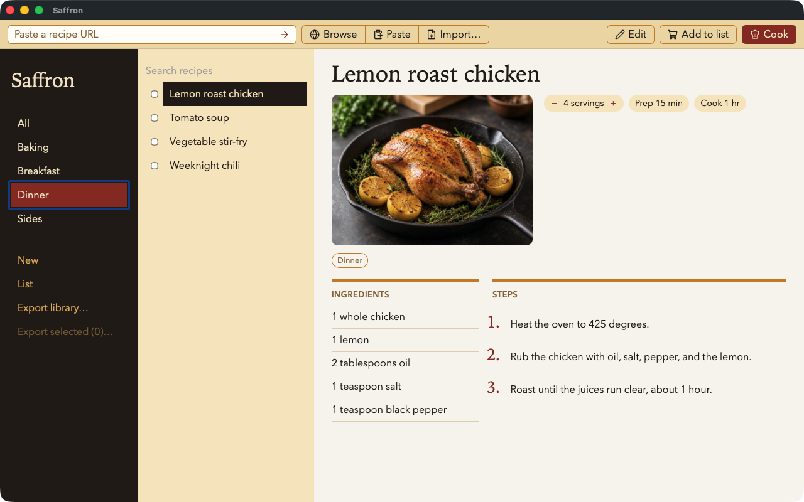
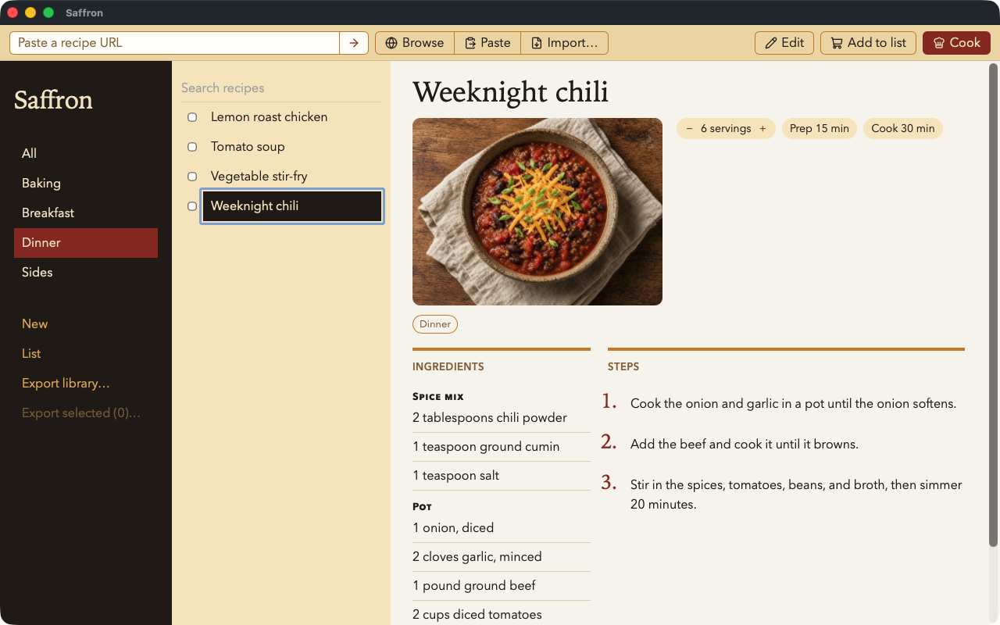
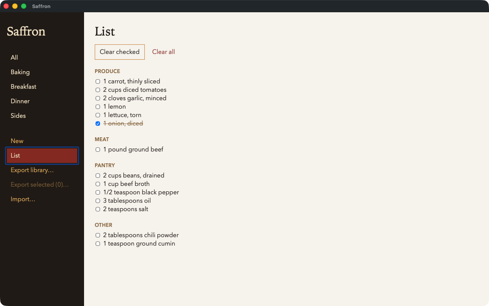
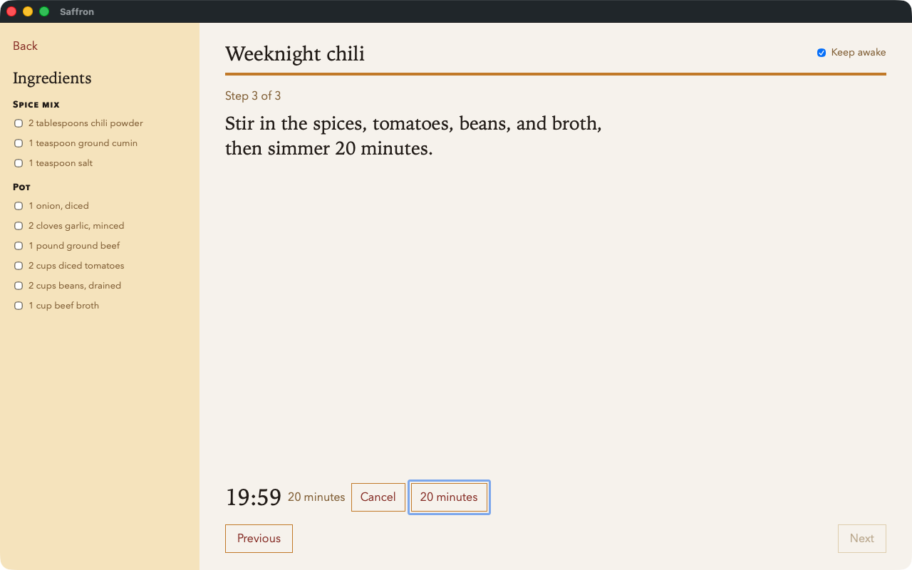

Screenshots




What it does
- A library with photos and categories.
- Save a recipe from any web page.
- Scale servings and convert units.
- A grocery list sorted by aisle.
- Cook mode with timers that keeps the screen awake.
- Back up your library, share recipes, or bring them over from another app.
Platforms
macOS
macOS 12 or later, Apple Silicon and Intel. Signed and notarized.
Windows
Windows 11 x64. The Windows build is an unsigned preview. Windows shows "Windows protected your PC". Click More info, then Run anyway.